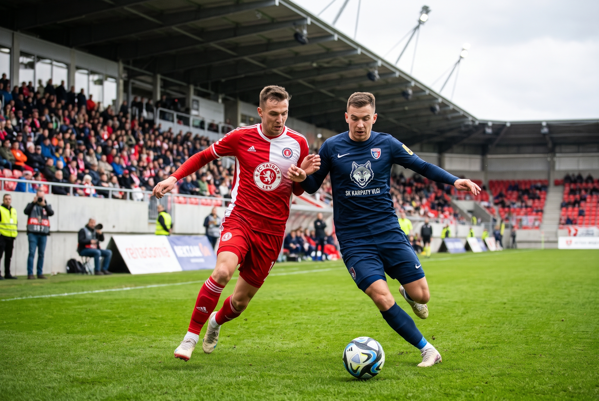

FANÚŠIKOVIA TVORIA ATMOSFÉRU NA IHRISKU
Futbalový zápas nie je len o tom, čo sa deje na trávniku. Povzbudzovanie z tribúny dodáva hráčom energiu a vytvára atmosféru, ktorá patrí k zápasovým víkendom.
Na miestnych ihriskách sa stretávajú rodiny, priatelia aj susedia. Spoločná podpora tímu spája ľudí a pripomína, že futbal je dôležitou súčasťou života obce.
Ďakujeme všetkým, ktorí prídu podporiť svoje mužstvo a pomáhajú vytvárať príjemné futbalové prostredie.
